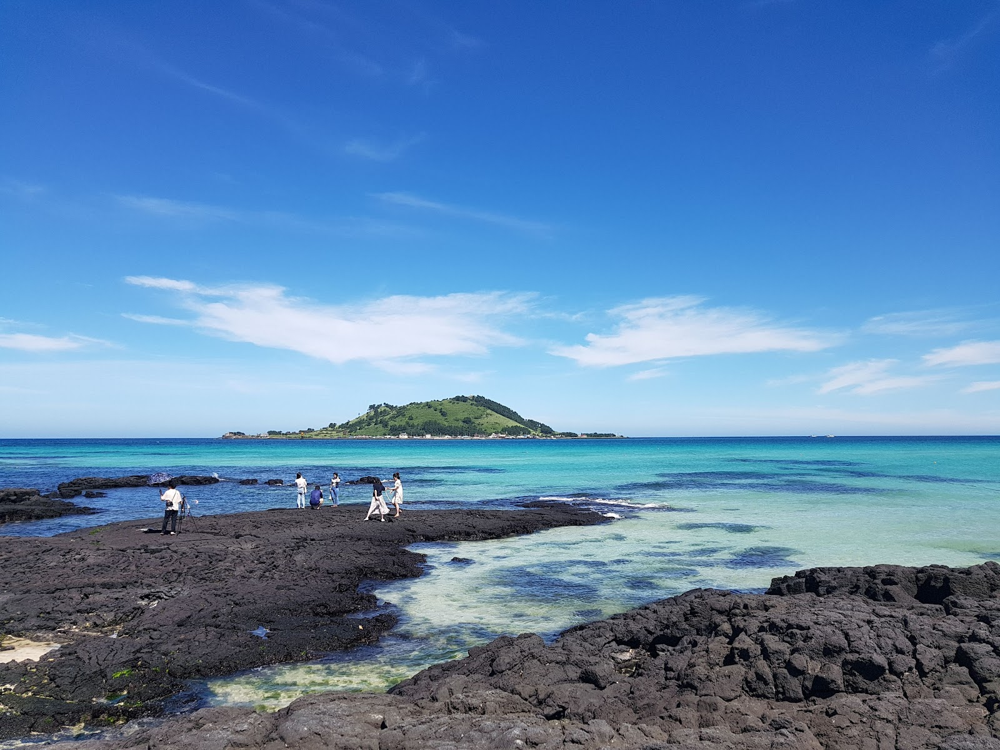

Hyeopjae Beach, Jeju: A Clear-Water Escape on the Island’s West Coast
At a glance: Hyeopjae Beach is a west-coast stop known for pale sand, clear-looking blue-green water and views toward Biyangdo Island. It suits a relaxed beach walk, a seaside pause or a longer visit when conditions are right for enjoying the water.
Address: 329-10 Hallim-ro, Hallim-eup, Cheju, Jeju-do
Google rating: 4.6/5 from 8,898 reviews. Ratings and review counts can change.
Why visit Hyeopjae Beach?
Jeju is famous for volcanic scenery, but its beaches offer a gentler way to experience the island. Hyeopjae, on the northwest coast, is an inviting place to slow down and take in the sea. Its light-colored sand contrasts with the vivid blue-green water, while Biyangdo Island sits offshore as a striking feature on the horizon. On a clear day, the island’s outline gives the view a distinctive sense of place.
The beach is appealing even if you do not plan to swim. Walk along the shore, watch the changing colors of the water, or simply take a break from driving around western Jeju. The view is especially rewarding when the sky is clear, but coastal weather can change quickly, so expect the scene to look different from one visit to another.
Hyeopjae is a good choice for travelers who want a scenic stop without needing a complicated itinerary. You can make it a brief photo break or leave time to linger. If you are visiting with children or anyone who prefers a slower pace, the open shoreline offers room to enjoy the surroundings without turning the visit into a demanding hike or activity.
How to make the most of your visit
Give yourself time to look beyond the water directly in front of you. Biyangdo is part of the appeal, and the view changes as you move along the beach. For photographs, try framing the island with the shoreline rather than focusing only on close-up shots of the water. Keep your camera or phone protected from sand and spray, particularly on a breezy day.
If you hope to swim, judge conditions when you arrive. Water visibility, waves and the overall feel of the shore can vary with weather and season. Follow any posted signs or instructions, and do not assume that swimming conditions or on-site services will be the same every day. Visitors who would rather stay dry can still enjoy a walk and the coastal panorama.
Consider visiting later in the day if you would like softer light for photographs, but check the local sunset time and weather before you go. The west-facing coast can make an attractive setting as the day winds down; the actual view depends on clouds and visibility.
Planning your trip
Hyeopjae Beach is in Hallim-eup, in western Jeju. Enter the supplied street address in your preferred navigation app and check the route from your starting point before setting out. Jeju is a large island, so allow enough time for your wider itinerary and avoid assuming that nearby sights are just a short walk away. If you are comparing map services, the Google Maps link below points to the place listing.
For international visitors, save the place name and address before you travel. You can search for “Hyeopjae Beach” in English, but having the address available can be helpful if a map app displays a slightly different transliteration. Mobile data access and map-app coverage can vary, so it is sensible to keep the destination details accessible offline if you expect to be without a connection.
Pack for a coastal visit rather than relying on conditions to be ideal: comfortable shoes for the sand, sun protection, water to drink and a light layer for wind are useful. If you plan to enter the water, bring what you need for changing afterward. Leave the beach as you found it and use designated bins where available.
Good to know
- Conditions vary: Wind, waves, visibility and beach conditions can change. Check the weather and follow local signs when you arrive.
- Plan for your own needs: Do not assume that particular facilities, services or swimming arrangements will be available during your visit.
- Navigation: Use the listed address, 329-10 Hallim-ro, Hallim-eup, Cheju, Jeju-do, and confirm your route in a current map app.
- Google listing: The supplied Google Maps listing shows a 4.6 rating from 8,898 reviews; this information may change over time.
- Respect the coast: Keep clear of restricted areas and take your rubbish with you.
Useful links
- Hyeopjae Beach on Google Maps
- No official website was provided for this place.
FAQ
Is Hyeopjae Beach worth visiting if I do not want to swim?
Yes. The pale sand, blue-green sea and view toward Biyangdo make it a worthwhile place for a walk, a photo stop or a quiet break by the coast.
Can I count on swimming conditions being good?
No. Conditions vary with weather and other local factors. Check the shore when you arrive and follow any posted guidance rather than assuming it is suitable for swimming.
What address should I enter in my map app?
Use 329-10 Hallim-ro, Hallim-eup, Cheju, Jeju-do, or open the Google Maps link above and confirm the destination before traveling.